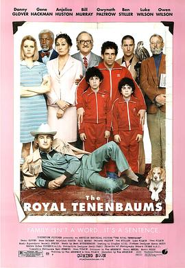

天才一族 / The Royal Tenenbaums
又名：癫才家族(港) / 特伦鲍姆一家
作品信息
| 导演 | 韦斯·安德森 |
| 编剧 | 韦斯·安德森 / 欧文·威尔逊 |
| 主演 | 吉恩·哈克曼 / 安杰丽卡·休斯顿 / 本·斯蒂勒 / 格温妮斯·帕特洛 / 卢克·威尔逊 / 欧文·威尔逊 / 比尔·默瑞 / 丹尼·格洛弗 / 西摩·卡塞尔 / 库玛·帕拉纳 / 亚历克·鲍德温 / 格兰特·罗森梅耶 / 乔纳·梅耶森 / 阿拉姆·阿斯拉尼安-珀西科 / 艾琳·戈洛瓦娅 |
| 类型 | 剧情 / 喜剧 / 家庭 |
| 制片国家/地区 | 美国 |
| 语言 | 英语 / 意大利语 |
| 上映日期 | 2001-10-05(纽约电影节) / 2001-12-14(美国) |
| 片长 | 110分钟 |
| IMDb | tt0265666 |
最后一次看到是 2026-08-12T21:11:21+08:00 · 豆瓣原页